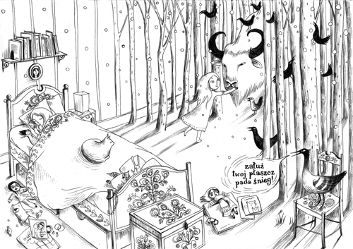
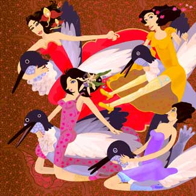
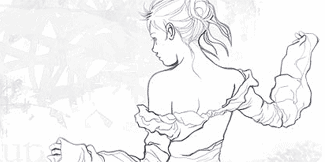
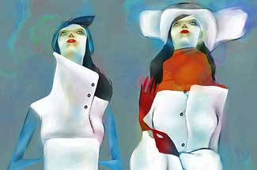
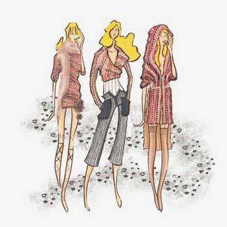
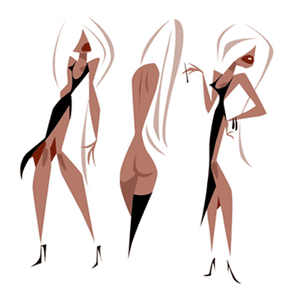
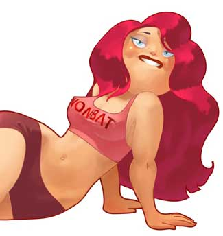

ДОРОГИЕ ЖЕНЩИНЫ!
Возбудите Меламеда
I`m back. 8-ое марта я пропустил, но все же хочу посвятить колонку женской иллюстрации.

Что бы это не значило: лучшие образцы иллюстраций, сделанных женщинами, лишены каких-либо формальных гендерных признаков, но отличаются ароматом, походкой и чем-то еще, что заставляет мужчин оборачиваться на улице (даже если женщина одета в штаны).

Галя Панченко два года назад рисовала исключительно простым и изредка синим карандашом, едва прикасаясь к бумаге, и один известный наш коллега, не буду показывать пальцем, говорил мне, что это, мол, не иллюстрация. Но я уже тогда знал, что вскорости она нам всем утрет носы.
Существует, однако, жанр, который происходит непосредственно от рисования принцесс в детском саду и характерен полным отсутствием в кадре лиц мужского пола. (я лично знаю девушек, которые в категоричной форме отказываются рисовать молодых людей). Приглядевшись, можно найти одного, а то двух, которые, конечно, принцы, но отличаются от подросших и оголивших пупки принцесс разве прической, реже — формой плеч и усами.

Наталья Пьерандрей. Да, еще мы любим готическую субкультуру.
Называется этот жанр по-разному, и часто как раз женской иллюстрацией. Еще говорят «гламур-» или «фэшн-». Как и любой устоявшийся жанр, он невыносимо скучен сам по себе; меня бросает в холодный пот при мысли о людях посвятивших ему жизнь — подобно тем, кто подбирает одежду для манекенов и расставляет их по витрине.

Первая работа Лены Плескевич, которая меня пробрала, и пробирает до сих пор. Пользуясь случаем: Лена, с днем рожденья. Побольше тебе вот этого вот.
Я понимаю, каждому — свое, но тут есть обратная сторона. Мне придется разочаровать тех женоиллюстраторов, которые считают, что делают это для мужчин. Я на своем веку не видел ни одной подобного рода иллюстрации, что вызвала бы у меня эрекцию. Простите мне мою прямоту — или же считайте, что в данном случае имеется в виду некая, так сказать, духовная эрекция. Такую может вызвать у мужчины вид, например, авианосца.
Остается надеяться, что на женщин предмет разговора действует именно так. Загвоздка как раз в том, что то самое эмоциональное напряжение, которое одно может вызвать у зрителя любого рода реакцию, здесь не в чести. Не стану врать, будто мы (мужчины) не читаем, скажем, Сosmopolitan и других женских журналов — вернее, читать мы их и правда не читаем, но перелистываем при каждой возможности оказаться с ними наедине.
Не ради эрекции: для нее есть журналы иные. Но если говорить об иллюстрации, то мужчины (тут не скажу «мы», потому сам ни разу не смог нарисовать ничего хоть сколько-то эротического: перевозбуждаюсь) знают о женской сексуальности (оговорюсь: внешней) много больше самих женщин.
ср.:


Причем дело вовсе не в разнице между мужскими и женскими представлениями об идеальной фигуре; которая разница, впрочем, велика. А опять же, в чем-то, чего не назовешь словами (при дамах, по крайней мере).
Не уходите далеко, продолжение следует. Номер 21 будет посвящен иллюстраторам мужских журналов. Опять лезу на соседский участок, но меня простят, надеюсь.

PS: К слову о женской иллюстрации. Хочу, опять запоздало, поздравить уважаемую, с позволения, коллегу с выходом книги. Это, конечно, подвиг, но и праздник, конечно, тоже. И, хотя глупо ворошить двухнедельной давности скандал, все же выскажусь — должность, так сказать, обязывает; да и наболело. Книжка замечательная, а с точки зрения иллюстрации придраться, считай, и вовсе не к чему. Но мне вот просто не нравится. Так что г-же Герчук также мои поклоны: попытка, так сказать, засчитана.